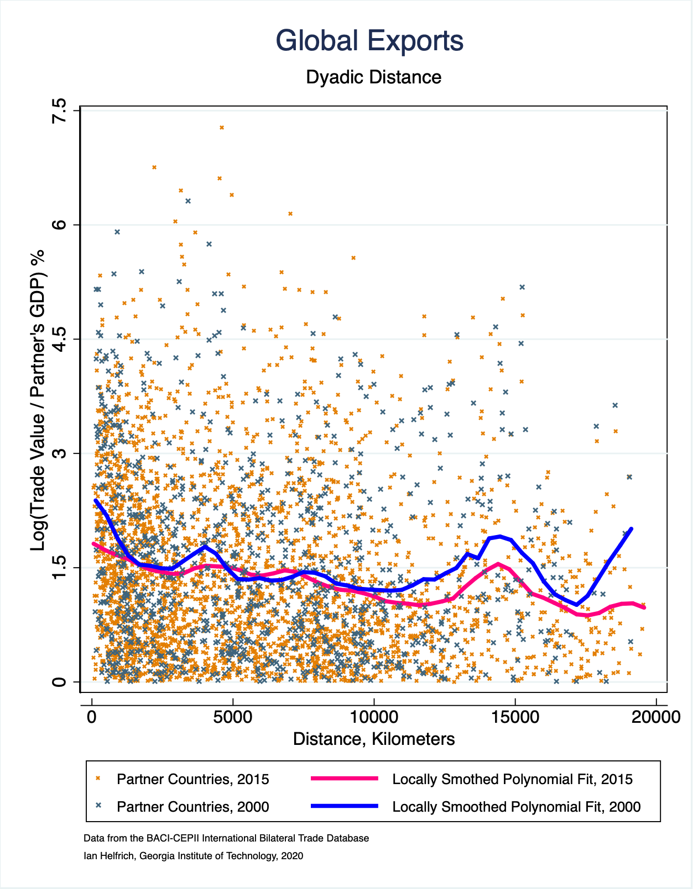

Roadmap
- Comparative advantage and Ricardian gains
- Short-run distribution: Specific-Factors
- Gravity model: theory, estimation, and new distance measures
- Tariffs, protection, and real-world evidence
Four Core Questions
Why trade?
Specialization and exchange expand consumption possibilities.
What gets traded?
Technology and opportunity costs determine patterns.
Who gains?
Factor specificity and prices determine distribution.
How much?
Trade costs and size dominate bilateral flows.
Model Map
Ricardian
Technology → comparative advantage → gains from trade.
Specific-Factors
Short-run winners/losers and policy coalitions.
Gravity
Size and distance → trade volumes, policy counterfactuals.
Ricardian Model
Comparative advantage with one factor of production.
Setup
- Technology summarized by unit labor requirements.
- Linear PPF with slope \(-a_{LW}/a_{LC}\).
- Opportunity cost drives specialization.
Autarky Prices and Wages
Competitive wages equalize across sectors.
Comparative Advantage
- Trade price must lie between autarky prices.
- Absolute advantage is irrelevant for trade patterns.
Gains from Trade
- Real wage rises in terms of the imported good.
- With one factor, all workers gain or stay whole.
Interactive: Comparative Advantage
Specific-Factors Model
Short-run factor immobility and distributional conflict.
Structure
- Factors: labor (mobile), capital (M-specific), land (A-specific).
- Diminishing marginal products in each sector.
- Relative prices reallocate labor.
Price Shock: \(P_M\) Rises
Labor shifts
From agriculture to manufacturing.
Marginal products
\(MPL_M\) falls, \(MPL_A\) rises.
Distributional Effects
Capital (M)
Real return rises unambiguously.
Land (A)
Real return falls unambiguously.
Labor
Ambiguous: depends on consumption weights.
Interactive: Price Shock Simulator
Policy Lens
- Tariff on agriculture raises \(P_A/P_M\).
- Landowners gain, capital loses, labor ambiguous.
- Explains trade-policy coalitions.
Gravity Model
Trade flows, structural gravity, and improved distance measures.
Baseline Gravity
- Flows rise with economic size and fall with trade costs.
- Strong empirical performance across time and space.
Tinbergen (1962); Pöyhönen (1963).
Structural Gravity
- \(P_i, P_j\): multilateral resistance terms.
- Proper general equilibrium interpretation.
Anderson & van Wincoop (2003).
Estimation Practice
PPML
Handles zeros and heteroskedasticity.
Fixed effects
Exporter/importer-time FE capture multilateral resistance.
Santos Silva & Tenreyro (2006).
Why Distance Matters
Traditional distance measures are static and city-based. But economic activity shifts over time within countries. A time-varying distance proxy can better reflect where production and demand actually sit.
Nightlights + Population-Weighted Distance
- Use VIIRS nightlights to weight origin economic activity.
- Use LandScan population to weight destination demand.
- Distance becomes time-varying and consistent for internal trade.
Helfrich dissertation, Chapter 2 (2024).
Comparing Distance Measures

Empirical Framework (Thesis)
Estimated for U.S. interstate trade (2017) and global panel trade (2015–2020), with PPML as robustness.
Key Findings
- Nightlights/pop-weighted distance remains negative and significant.
- Magnitudes align with Head & Mayer (2010) distance measures.
- Standard errors and RMSEs are small, indicating stable fit.
- Single distance measure works for both inter- and intra-regional trade.
Helfrich dissertation, Chapter 2 results section.
Trade Geography Shifts
Interactive: Gravity Calculator
Tariffs and Protection
Supply, demand, and distributional effects.
Small-Country Tariff
- World price unchanged (no terms-of-trade gain).
- Consumer surplus ↓, producer surplus ↑, revenue ↑.
- Net welfare loss equals deadweight loss.
Effective Rate of Protection
- Large ERP if inputs are lightly taxed.
- Measures protection of value added, not just outputs.
Interactive: Small-Country Tariff
Interactive: Policy Counterfactuals
U.S. Tariffs and Evidence
- Tariff pass-through to import prices was high.
- Retaliation reduced U.S. exports; real income fell.
- Farm exports hit; federal trade-aid offset losses.
NBER w25672; NBER w25638; CRS R45310.
Putting It Together
Use the model that matches the question.
Ricardian
Technology drives specialization and gains.
Specific-Factors
Short-run winners/losers shape policy.
Gravity
Trade costs and size explain volumes.
Thanks
Next: Heckscher–Ohlin and firm-level trade.